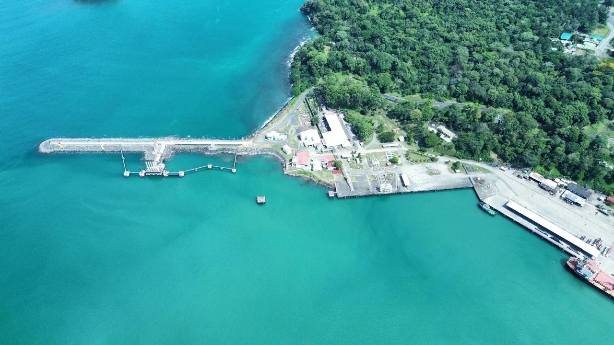

Diesel, gasolina, fuel oil, LPG y asfalto en los Puestos 5-0 y 5-1 de la Terminal RECOPE. Coordinación JAPDEVA, monitoreo de swell en tiempo real y presencia en campo 24/7.Diesel, gasoline, fuel oil, LPG and asphalt at RECOPE Terminal Berths 5-0 and 5-1. JAPDEVA coordination, real-time swell monitoring and 24/7 on-ground presence.